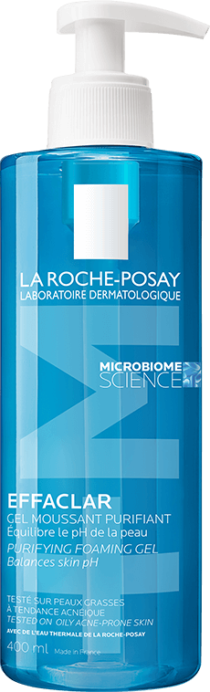
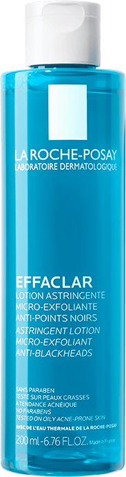
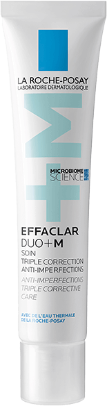

GERA GYVENTI, KAI ODAI GERA
Effaclar DUO+ M
Poveikis jau po 8 val.1
TREJOPO POVEIKIO
KREMAS, APSAUGANTIS NUO:
inkštirų ir
egzemų
spalvos pakitimų
dėl aknės
netolygumų
atsiradimo
MOKSLINIS PROVERŽIS
APIE ODOS MIKROBIOMĄ
Sutrikus odos mikrobiomai vystosi aknė ir ūmėja jos simptomai, taip pat daugėja C.acnes IA1 bakterijų. Tad norint, kad oda atrodytų sveikai, labai svarbu palaikyti mikrobiomos pusiausvyrą.
Todėl sukūrėme priemonę, kurios sudėtyje yra FILOBIOMOS, stabdančios skatinančių aknės paūmėjimą C.acnes IA1 tipo bakterijų dauginimąsi.
VEIKLIOSIOS MEDŽIAGOS
FILOBIOMA
Padeda nuraminti odą ir sumažinti nelygumus, nes mažina skatinančių aknės paūmėjimą C.acnes IA1 bakterijų dauginimąsi.
PROCERADAS
Patentuotas keramidas, apsaugantis nuo spalvos pakitimų dėl aknės.
NIACINAMIDAS
Padeda mažinti matomas tamsias dėmės. Mažina odos riebalų perteklių.
MANOZĖ
Padeda regeneruoti epidermį, taip pat drėkina odą.
AQUA POSAE
FILIFORMIS
Padeda tvariai atkurti odos pusiausvyrą ir ramina.
VEIKSMINGUMAS PATVIRTINTAS
TYRIMAIS
Po 8
VALANDŲ1
Netolygumai sumažėja, poros tampa mažiau matomos, oda –
lygesnė.
Po 4
SAVAIČIŲ
-66% mažiau inkštirų2
-44% mažiau egzemų3
-45% mažiau spalvos
pakitimų dėl aknės3
93%
gražina odą4
91%
kremas ramina odą4
drėkina
24h
val.5
VEIKSMINGA „EFFACLAR“ RUTINA
APSAUGO NUO ODOS TRŪKUMŲ
1

EFFACLAR
Valomasis
gelis
Šalina nešvarumus ir odos riebalų perteklių, oda tampa švari ir gaivi.
RINKTIS2

EFFACLAR
Šveičiamasis tonikas
Veikia iš karto, mažina matomus inkštirus, taip pat reguliuoja odos riebalų perteklių ir sutraukia odą.
RINKTIS3

EFFACLAR
DUO+M
Padeda greitai pašalinti netolygumus – inkštirus ir egzemas. Apsaugo nuo spalvos pakitimų pasikartojimo ir mažina jų atsiradimo riziką.
RINKTIS
la roche-posay
ĮSIPAREIGOJIMAI

100% PRODUKTŲ IŠTIRTI
DĖL ALERGIJOS SUKĖLIMO

TIK ESMINĖS VEIKLIOSIOS SUDEDAMOSIOS MEDŽIAGOS IR OPTIMALI JŲ KONCENTRACIJA

LAIKO TĖKMEI ATSPARIOS FORMULĖS

IŠBANDYTA SU LABAI JAUTRIA ODA